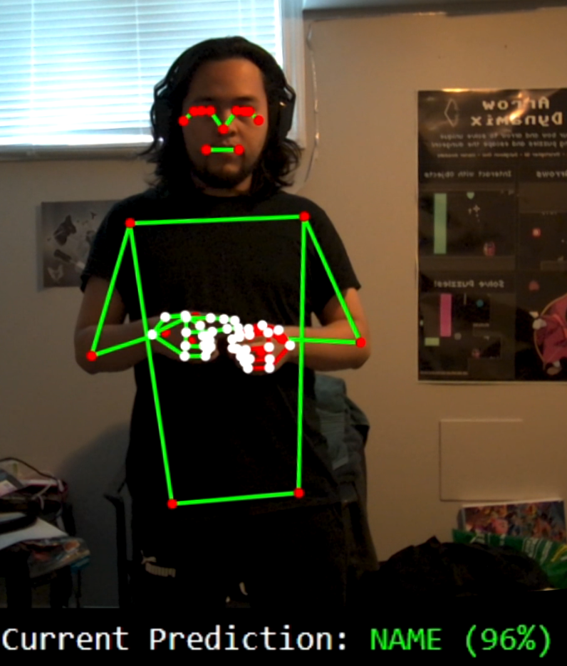

GPU infrastructure01
KVWatch
From live inference metrics to individual requests. Three focused views connect latency, throughput, GPU memory, and request-level KV-cache usage.
Explore the systemAI & systems engineer
I build the systems behind useful AI.
From multi-GPU inference to real-time computer vision, I turn complex workloads into practical, observable tools.
01 / Selected work
AI infrastructure, applied ML,
and a few things built from scratch.
From live inference metrics to individual requests. Three focused views connect latency, throughput, GPU memory, and request-level KV-cache usage.
Explore the system
Turning signed gestures into readable text. A real-time ASL recognition pipeline with a custom-trained LSTM and language post-processing.
View the case study02 / Experience & toolkit
Software & Systems Engineering Intern · AI Infrastructure
Teaching Assistant · C Programming & Discrete Mathematics
Supported students in programming, algorithms, logic, and debugging through tutorials and one-on-one technical guidance.
Queen's Excellence in Teaching Assistance Award · 2025
03 / Education
Queen's University
Computer Science
04 / Let's connect
I'd love to talk AI, infrastructure, and what you're building.